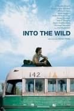
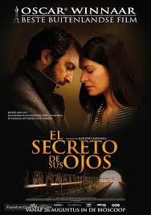

Valéria Prando
Oceanographer
Ocean and atmospheric sciences researcher, volunteer in environmental conservation projects and currently gliding to web developing field.
Complete CVMy Favorite Movies
Amélie Poulain"Amélie" is a fanciful comedy about a young woman who discretely orchestrates the lives of the people around her, creating a world exclusively of her own making. Shot in over 80 Parisian locations, acclaimed director Jean-Pierre Jeunet ("Delicatessen"; "The City of Lost Children") invokes his incomparable visionary style to capture the exquisite charm and mystery of modern-day Paris through the eyes of a beautiful ingenue. |
|
|  |
Into the WildChristopher McCandless (Emile Hirsch), son of wealthy parents (Marcia Gay Harden, William Hurt), graduates from Emory University as a top student and athlete. However, instead of embarking on a prestigious and profitable career, he chooses to give his savings to charity, rid himself of his possessions, and set out on a journey to the Alaskan wilderness. |
|  |
El secreto de sus ojosHoping to put to rest years of unease concerning a past case, retired criminal investigator Benjamín Espósito (Ricardo Darín) begins writing a novel based on the decades-old unsolved mystery of a newlywed's rape and murder. With the help of a former colleague, Judge Irene Menéndez Hastings (Soledad Villamil), Benjamín attempts to make sense of the past. The journey through his memories sets Benjamín on a thrilling emotional path that leads to a shocking realization. |